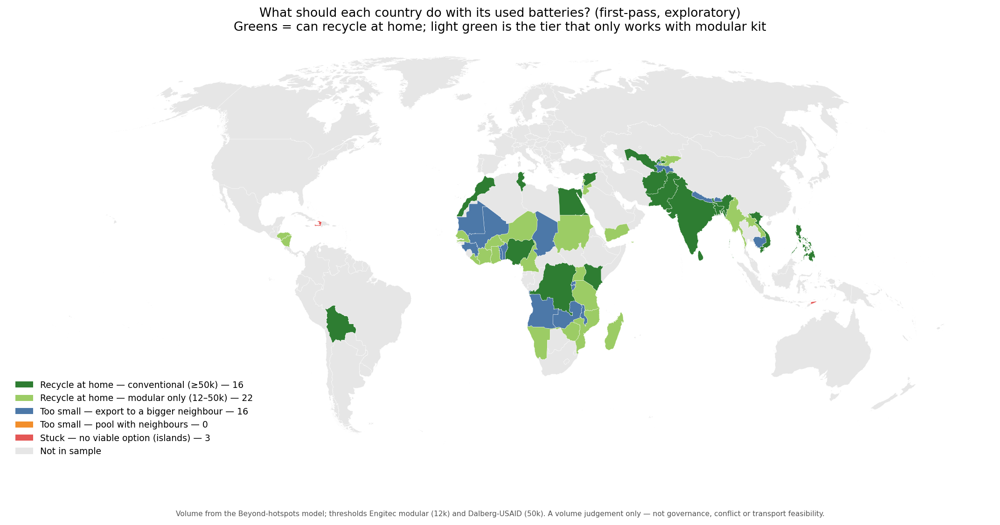

Which countries could safely recycle their own used lead-acid batteries?
Preliminary working figures · draft, subject to changeSafe lead-acid battery recycling only pays at scale. These first-pass figures estimate how much used battery (ULAB) volume each of 57 low- and middle-income countries generates a year, compare it with the scale a safe plant needs, and ask what each country should do with it — recycle at home, export to a bigger neighbour, or (for a few small islands) neither.
1. Most countries fall below conventional recycling scale

2. What each country should do with it

Methods — how the volume estimate is built
Annual used lead-acid battery (ULAB) volume is estimated bottom-up from each country’s vehicle fleet, following the vehicle-demand model in Crawfurd, Mitchell & Hu (2026). For each vehicle type, the lead entering the waste stream per vehicle each year is:
where w = battery weight (kg), n = batteries per vehicle, c = lead content by weight (0.65), and s = battery service life (years). The five vehicle types and the lead each puts into the waste stream per year:
| Vehicle type | Battery wt (kg) | Batteries | Life (yr) | Lead/yr (kg) |
|---|---|---|---|---|
| Passenger car | 20 | 1 | 2 | 6.5 |
| Commercial vehicle | 50 | 2 | 2 | 32.5 |
| Motorcycle | 5 | 1 | 2 | 1.6 |
| Electric two-wheeler | 40 | 1 | 1 | 26 |
| Electric three-wheeler | 30 | 4 | 1 | 78 |
National generation sums across the fleet, grosses up for non-vehicle (solar, telecom, standby) batteries, then converts lead back to whole-battery weight:
ULAB (t/yr, whole batteries) = total lead ÷ c
φ = vehicle share of all lead-acid batteries (0.75), so dividing by it adds the ~25% non-vehicle share; c = 0.65. Fleet data from WHO, IRF, OICA and electric two/three-wheeler sources.
Scale thresholds (whole-battery t/yr): modular-plant floor 12,000 (Engitec, Côte d’Ivoire); conventional break-even 24,000 and the export-vs-recycle line 50,000 (Dalberg/USAID, 2024).
What each country should do: recycle at home — conventional if ULAB ≥ 50,000, modular if 12,000–50,000; if below 12,000, export to a bordering country that itself clears 12,000; otherwise stuck. Adjacency is from shared land borders.
Per-country data (57 countries)
| Country | ULAB t/yr | What it should do |
|---|---|---|
| India | 2,081,213 | Recycle at home — conventional (≥50k) |
| Vietnam | 878,929 | Recycle at home — conventional (≥50k) |
| Bangladesh | 281,994 | Recycle at home — conventional (≥50k) |
| Nigeria | 226,739 | Recycle at home — conventional (≥50k) |
| Egypt, Arab Rep | 181,452 | Recycle at home — conventional (≥50k) |
| Syrian Arab Republic | 164,903 | Recycle at home — conventional (≥50k) |
| Pakistan | 157,369 | Recycle at home — conventional (≥50k) |
| Morocco | 115,472 | Recycle at home — conventional (≥50k) |
| Philippines | 92,837 | Recycle at home — conventional (≥50k) |
| Sri Lanka | 70,422 | Recycle at home — conventional (≥50k) |
| Uzbekistan | 67,208 | Recycle at home — conventional (≥50k) |
| Kenya | 60,770 | Recycle at home — conventional (≥50k) |
| Tunisia | 54,981 | Recycle at home — conventional (≥50k) |
| Congo, Dem Rep | 54,960 | Recycle at home — conventional (≥50k) |
| Afghanistan | 52,353 | Recycle at home — conventional (≥50k) |
| Bolivia | 51,492 | Recycle at home — conventional (≥50k) |
| Kyrgyz Republic | 48,978 | Recycle at home — modular (12–50k) |
| Ghana | 47,933 | Recycle at home — modular (12–50k) |
| Uganda | 42,933 | Recycle at home — modular (12–50k) |
| Lao PDR | 42,045 | Recycle at home — modular (12–50k) |
| Cote d'Ivoire | 41,140 | Recycle at home — modular (12–50k) |
| Myanmar | 38,479 | Recycle at home — modular (12–50k) |
| Lebanon | 34,038 | Recycle at home — modular (12–50k) |
| Madagascar | 31,853 | Recycle at home — modular (12–50k) |
| Nicaragua | 29,952 | Recycle at home — modular (12–50k) |
| Senegal | 29,034 | Recycle at home — modular (12–50k) |
| Yemen, Rep | 29,000 | Recycle at home — modular (12–50k) |
| Jordan | 28,794 | Recycle at home — modular (12–50k) |
| Zimbabwe | 23,443 | Recycle at home — modular (12–50k) |
| Tanzania | 22,033 | Recycle at home — modular (12–50k) |
| Burkina Faso | 20,554 | Recycle at home — modular (12–50k) |
| Sudan | 20,117 | Recycle at home — modular (12–50k) |
| Mozambique | 18,592 | Recycle at home — modular (12–50k) |
| Honduras | 17,683 | Recycle at home — modular (12–50k) |
| Liberia | 16,814 | Recycle at home — modular (12–50k) |
| Cameroon | 16,789 | Recycle at home — modular (12–50k) |
| Namibia | 15,502 | Recycle at home — modular (12–50k) |
| Niger | 12,455 | Recycle at home — modular (12–50k) |
| West Bank and Gaza | 11,738 | Export to a bigger neighbour (<12k) |
| Guinea | 11,656 | Export to a bigger neighbour (<12k) |
| Angola | 10,400 | Export to a bigger neighbour (<12k) |
| Zambia | 8,743 | Export to a bigger neighbour (<12k) |
| Nepal | 8,433 | Export to a bigger neighbour (<12k) |
| Tajikistan | 7,828 | Export to a bigger neighbour (<12k) |
| Mali | 6,790 | Export to a bigger neighbour (<12k) |
| Malawi | 5,867 | Export to a bigger neighbour (<12k) |
| Rwanda | 5,111 | Export to a bigger neighbour (<12k) |
| Togo | 4,242 | Export to a bigger neighbour (<12k) |
| Burundi | 3,622 | Export to a bigger neighbour (<12k) |
| Benin | 3,482 | Export to a bigger neighbour (<12k) |
| Haiti | 2,807 | Stuck — no viable option |
| Bhutan | 2,317 | Export to a bigger neighbour (<12k) |
| Mauritania | 1,400 | Export to a bigger neighbour (<12k) |
| Cambodia | 1,233 | Export to a bigger neighbour (<12k) |
| Chad | 897 | Export to a bigger neighbour (<12k) |
| Micronesia, Fed Sts | 269 | Stuck — no viable option |
| Timor-Leste | 27 | Stuck — no viable option |
Full data and code: github.com/lcrawfurd/ulab-recycling-scale (data/ulab_volume_by_country.csv, data/country_status.csv).